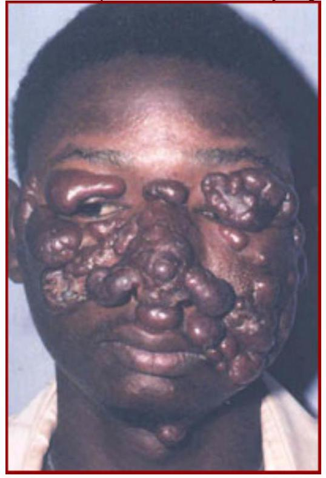

SECTION 4: VECTOR-BORNE DISEASES (Part 2)
Filariasis (Elephantiasis)
This is a disfiguring disease caused by a tiny worm (nematode) called wuchereria bancrofti. It is mainly transmitted by mosquitoes; the culex quinquefasciatus found in heavily contaminated water especially in the urban areas and the culex pipiens and the anopheles mosquito in rural areas. These mosquitoes transmit the worm from person to person in the same way as malaria. The parasitic worm lives in the lymphatic system of the patient causing inflammation of the lymphatic vessels and lymph glands (lymphangitis, lymphadenitis), filarial fever, and eventually elephantiasis of the arms, legs and genitals. The disease is most frequent in the tropical coastal belts and the lake region.
Mode of Transmission
The microfilariae ingested by the feeding mosquito exsheath in the stomach and become first stage larva. They then penetrate the mosquito stomach wall and migrate to the thorax muscles where they moult twice and develop into the infective stage.
Mature infective microfilariae migrate to the mouthparts of the mosquito. The extrinsic incubation period takes 10-12 days.

Clinical Features
The presence of mature filarial worms in the lymphatic vessels triggers an inflammatory reaction in the walls of these vessels. When the worms die, more foreign proteins are released causing calcification of the lymphatic walls which eventually leads to obstruction of the flow of lymph fluid. If the obstruction of the lymph flow is extensive, chronic oedema develops in the affected areas of the body. Filariasis progresses through three stages.
Acute Phase
- Fever
- Eosinophilia
- Enlarged lymph nodes
- Inflamed lymph vessels (lymphangitis)
Sub Acute Phase
- Fever
- Eosinophilia (severe)
- Attacks of dyspnoea (asthma-like)
- Funiculitis (pain and swelling of the spermatic cord/s)
- Epididymitis
- Hydrocele
- Lymphadenitis (tender lymph nodes)
Chronic Phase
- Lymphoedema
- Elephantiasis
- Chyluria
- Hydrocele
Diagnosis
- Fluid aspirated from swollen lymph glands or from hydrocele can be examined under a microscope to show the microfilariae.
- Thick blood slides for microfilariae should be taken between 10:00pm and 2:00am. This is because microfilariae are not present in the peripheral blood during the day.
- Blood slides for microfilariae may be taken 45 minutes after administration of a provocative dose of diethylcarbamazine 100 mg .
Management
The drug of choice for filariasis (adult worms and microfilariae) is diethylcarbamazine (DEC, hetrazan, benocide, notezine) $6 \text{ mg/kg}$ body weight daily in divided doses ($150 \text{ mg}$) eight hourly for 12 days for an adult.
Diethylcarbamazine may be combined with levamisole. This combination kills microfilariae and reduces the parasite worm count in the body more rapidly.
Prevention and Control
The prevention and control of filiariasis includes:
- Anti-mosquito measures; the same as those used for control and prevention of malaria
- Use of larvicides such as polystyrene powder in the pit latrine
- Reduction of human-mosquito contact including the use of insecticide treated bed nets and screening of houses
Yellow Fever
Yellow fever is an acute viral disease transmitted to human being by the aedes aegypti mosquito. Yellow fever can spread rapidly, and case fatality rate may reach as high as $30\%$ in non-immune populations. Yellow fever is a disease of forest monkeys (zoonoses) and is transmitted among them by the aedes africanus mosquito. Humans may be bitten outside the forest by mosquitoes which have acquired the disease from monkeys feeding on bananas and other agricultural plantations. In urban areas, yellow fever is transmitted by the aedes aegypti. Yellow fever is a disease of tropical African countries, especially in the rain forests.
Mode of Transmission
The mosquito becomes infected after feeding on the blood of an infected monkey or person on the third day of fever. The incubation period takes 18 days at a daily temperature of $18^{\circ}\text{C}$ and four days at $37^{\circ}\text{C}$. The cycle takes four days and once infected, the mosquito remains infected and infective for its entire life (about two to four months).
A person may also become infected with yellow fever through handling of blood from an infected individual in the first three days of the disease or handling infected monkeys in the early stages of viraemia. Laboratory staff may become infected when working on infected monkeys or infected mosquitoes.
Clinical Picture
The onset is sudden with the following signs and symptoms:
- Fever
- Headache
- Backache
- Nausea and vomiting
- A bleeding tendency (epistaxis, bleeding gums, haematemesis, malaena)
- Liver cell necrosis (in severe illness) resulting in jaundice
- Nephritis leading to albuminuria which may proceed to anuria and renal failure
Management
Yellow fever like most other viral haemorrhagic diseases has no specific drug for treatment. You only give supportive treatment and ensure that the patient is nursed in strict isolation using ordinary barrier nursing techniques. You also ensure that the patient has no further contact with the mosquitoes through the use of insecticide treated bed nets and ensuring that the room is well screened. This is to prevent further spread of the disease from the patient to other healthy people.
Prevention and Control
- Administering yellow fever vaccine to all travellers coming from or going to yellow fever endemic areas.
- Spraying aircraft coming in from yellow fever endemic areas with insecticides to kill imported mosquitoes, which may be infected.
- Isolating all persons who have been in contact with the infected persons. Such individuals should be quarantined in screened houses for seven days.
- Mass immunisation campaign for the community in areas infested with the aedes aegypti mosquito.
- Spraying of larvicides in all possible mosquito breeding places including water holding plants.
Trypanosomiasis (Sleeping Sickness)
Trypanosomiasis is a tropical disease caused by protozoa called Trypanosoma brucei gambiense (Tbg) and Trypanosoma brucei rhodesiense (Tbr). The important reservoir of Tbr in the wild is the bushbuck. Trypanosomiasis affects both humans and cattle and is invariably fatal over varying periods of time if not treated.
Trypanosoma brucei gambiense causes an acute, rapidly progressive illness with death from cardiac complications within several weeks or months. Reservoirs include antelope and pigs. Tbr is found in eastern Africa, now mostly in south-east Uganda.
Trypanasomiasis spreads very rapidly unless the source (the very first case) is identified early, isolated and treated properly. Trypanasomiasis is found in the same areas in Africa where yellow fever is found.
Mode of Transmission
Trypanosomiasis is transmitted by tsetse flies which live in areas of wooded vegetation. Tsetse flies are usually not found in flat plains, closely cultivated areas or areas densely inhabited by people. There are two important types of tsetse flies known to transmit the disease to humans. There is glossina palpalis, a riverine type which breeds along rivers and lakes, and glossina morsitans the woodland type which lives away from water. glossina palpalis is the main vector of Tb gambiense, while glossina morsitans is the main vector for Tb rhodesiense and it prefers to bite cattle and game but will also bite humans. Of the two types of tsetse flies, glossina palpalis (which transmit Tb gambiense parasite) is the main vector in East Africa.
Tsetse flies become infected with sleeping sickness parasites when they take a blood meal from infected persons or animals. After a period of time, during which the trypanosomes undergo development changes, the fly is able to transmit the infection when it bites another susceptible animal or person.
The Disease Transmission Cycle of Trypanosomiasis of Trypanosomiasis
Human
Clinical Features
There is considerable variation in the clinical picture of African trypanosomiasis (AT). Within a few days of a tsetse bite, fever develops due to the invasion of the blood stream by the trypanosomes. The incubation period between the tsetse bite and the onset of fever varies from as short as a few hours following the chancre to several weeks. The early stages of trypanosomiasis are characterised by irregular episodes of fever with headaches, malaise, weight loss, muscle and joint pains, pruritus, anaemia, skin rash, and deep hyperaesthesia (Karandel's sign).
The clinical features of trypanosomiasis depend on the infecting parasite as follows:
- Trypanosoma brucei gambiense (Tbg) infection causes a slow chronic sleeping sickness, resulting in death from the disease in several months or years. Pigs, dogs and antelopes are the reservoirs.
- Trypanosoma brucei rhodesiense (Tbr) infection is acute and rapidly progressive unless prompt treatment is administered. The parasites damage the heart causing cardiac complications and death within several weeks or months. Pigs and antelopes are the reservoirs for Tb rhodesiense.
Trypanosomiasis presents in the following three stages:
Primary Stage (chancre stage)
Within a few days of the tsetse bite, a painful indurated erythematous nodule may appear at the site of the bite. This chancre may last for one to two weeks and then resolve spontaneously. The chancre occurs in 70\% of cases in Europeans but is rare in Africans.
Blood Stage (systemic illness)
During this stage, the trypanosomes spread to the blood, lymph and lymph nodes. There is fever, which does not follow any typical pattern but recurs at intervals of days or weeks. After the fever resolves, the patient develops anaemia, debilitation and general body weakness. The spleen becomes enlarged as well as the lymph nodes. The cervical lymph nodes especially of the lower back of neck become visibly enlarged in 80\% of patients - this is called Winterbottom's sign. The other signs and symptoms of trypanosomiasis include:
- Pruritic rash (beginning six to eight weeks after infection)
- Hepatosplenomegaly
- Poor appetite resulting in weight loss, debility, pitting oedema of face and lower legs
- Impotence and menstrual irregularities
- Heart failure
Cerebral Stage (Sleeping sickness stage)
This is the terminal stage of trypanosomiasis. During this stage of the disease, the parasites invade the brain leading to mental deterioration and coma. Convulsions and localised signs such as hemiplegia and facial palsy may occur. Patients are very weak, they sleep during the day but are restless at night. As the disease progresses, the patients become severely ill and die if not treated.
Diagnosis
- Microscopic examination of the chancre fluid to demonstrate the trypanosomes
- Examination of blood (buffy coat) for trypanosomes
- Wet blood smear for microscopy
- Thick blood smear for microscopy
- Serological test (card agglutination test)
- Lymph node aspiration (microscopy)
Management
| Day 1 | Day 2 | Day 3 | Week 2 | Week 3 | Week 4 |
|---|---|---|---|---|---|
| 0.5 ml | 1.0 ml | 1.0 ml | 2.5 ml* | 3.5 ml* | 5.0 ml* |
important: The drugs used for the treatment of trypanosomes are highly toxic.
Common Side Effects of Trypanosomiasis Drugs
| Drug | Toxicity |
|---|---|
| Suramin | Mild proteinuria, arthralgia, severe dermatitis. diarrhoea, nephritis |
| Pentamidine | Hypoglycaemia, nephritis. diabetes mellitus. injection abscess. collapse if injected intravenously |
| Melarsoprol | Jarisch-herxheimer reaction, arsenical encephalopathy. mortality up to 100\% |
| Difluoromethyl ornithine | Diarrhoea, abdominal pain |
| Nitrofurazone | Haemolysis, neuropathy |
Prevention and Control
The following measures are effective in the prevention and control of sleeping sickness.
- Chemoprophylaxis; IM pentamidine 250 mg single dose protects against Tb gambiense infection for six months in those working in endemic areas such as wildlife personnel.
- Bush clearing (which may harm the environment) and establishment of bush land agricultural settlement will in the long run destroy tsetse fly breeding areas.
- Use of baited flytraps which have an efficacy of 95\% at reducing the tsetse fly population.
Schistosomiasis
This disease is commonly known as Bilharzia after Theodor Bilharz who discovered it in Cairo in 1861. The incidence of schistosomiasis is related to water use. Irrigation schemes or water projects for electricity provide the habitat for the snail vectors. Up to 75\% of schistosomiasis is transmitted by infected humans while 25\% is said to be transmitted by dogs, cows, rats, and baboons. In East Africa, there are two types of schistosomiasis, both of which are named after the causative parasite. They are schistosoma mansoni and schistosoma haematobium.
Mode of Transmission
S. mansoni is spread in infected stool while S. haematobium is spread in infected urine. When the schistosome eggs in the urine enter a body of water such as a lake, dam, rice paddy or pond, they hatch into free-swimming larvae called miracidia. The intermediate host for S. mansoni is a vector snail of the genus biomphalaria pfeifferi; while for the S . haematobium it is bulinus africanus. The miracidia, after being shed from the ovum, must enter the appropriate snail host within 24 hours or die.
Transmission Cycle of Schistosomiasis
Inside the body of the snail host, it takes the miracidia four to seven days to develop and multiply into numerous infective cercariae.
The snail sheds them in water where they can only live for 48 hours unless they infect a human. A human being becomes infected when they enter cercariae-infested water, such as when bathing, swimming, laundering, cultivating or fishing.
The Disease Transmission Cycle of Schistosomiasis
The cercariae penetrate the skin and enter the bloodstream from where they are carried to the liver or bladder to develop into adult worms. Within four to six weeks, paired adults reach mesenteric and pelvic veins.
Clinical Features
Schistosomiasis as a disease develops in four stages, each of which is characterised by specific signs and symptoms.
Effects of Late Stage Schistosomiasis
| Urinary Bladder: |
|
| Liver: |
|
| Lungs: |
|
| Bowel: |
|
Diagnosis
The diagnosis of schistosomiasis is confirmed by finding eggs in stools or urine during a microscopic examination. If this test is found to be negative, a colonic or urinary bladder biopsy can be done. Serological tests are also highly sensitive and yield specific results.
Management
The main aim of treatment is to kill the adult worms and to stop their egg-laying activity.
Drugs Used in the Oral Treatment of Schistosomiasis
| Type of drug | Dose | Contraindications | Side effects | Remarks |
|---|---|---|---|---|
| Praziquantel (Biltricide. Distocide. Cysticide, Cesol, Cestox. Coestocide) | S. mansoni: $30 \text{ mg/kg}$ twice in one day |
None (drug of choice if liver diseased) | Mild giddiness | Expensive but equally effective for both types |
| Oxaminoquine (Vansil) | S. mansoni $15 \text{ mg/kg}$ 12 hourly (twice daily) for 2 days | Epilepsy | Occasional drowsiness. dizziness Or psychosis | Not effective for S. haematobium |
| Metrophonate (Bilarcil) | S. haematobium 7.5-$10 \text{ mg/kg}$ body wt. given in 3 doses at intervals of 14 days; that is a total dose of 22.5-$30 \text{ mg/kg}$. | None | None if correct dose | Not effective for S. mansoni |
Prevention and Control
The prevention of schistosomiasis can be achieved through the following measures:
-
Prevention of ova-containing urine and stool from reaching the water by:
- Digging and using pit latrines
- Safe water supply
- Treating the infected persons
- Attacking the intermediate host (the snail) using molluscicides such as copper sulphate which kills snails and their eggs.
- Avoiding contact with infested water by using protective clothing when laundering, cultivating, swimming and wading. Bathing should be done at home (storing water at home for three days will kill the cercariae).
- Conducting mass treatment campaigns for communities at risk using oral praziquantel, especially school-going children.
Leishmaniasis (Kala Azar)
This is an infection caused by a parasite of the leishmania group. The disease is also known as Kala Azar. There are three forms of leishmaniasis which are caused by different parasites.
The vector of leishmaniasis is the female sandfly (phlebotomus). The four types of sand flies are:
- Phlebotomus martini
- Phlebotomus orientalis
- Phlebotomus longipes
- Phlebotomus pedifer
In Kenya, the main vectors are phlebotomus martini which transmit the parasite leishmania donovani, responsible for visceral leishmaniasis. The species P. orientalis is common in Sudan while P. longipes and P. pedifer are commonly found in Ethiopian and Kenyan highlands. Together they transmit the parasite leishmania aethiopica which is responsible for cutaneous leishmaniasis.
| Type of Leishmaniasis | Causitive Parasites |
|---|---|
| Visceral |
|
| Cutaneous |
|
| Mucocutaneous | Leishmania braziliensis |
Mode of Transmission
The zoonotic hosts of leishmaniasis are mainly dogs and rodents, although in some parts of Kenya humans have become the reservoir as well as host. The parasites of leishmaniasis are transmitted when the sandfly bites an infected person and ingests amastigotes. On reaching the sandfly's stomach, the amastigotes change into promastigotes. After four to seven days, they migrate to the foregut where they develop into infective promastigotes. The infective promastigotes are then conveyed in the saliva of the sandfly during feeding.
During feeding, the sandfly tears the host's tissue to feed on blood and at the same time deposits infective promastigotes at that site. From here the promastigotes enter the bloodstream and into the macrophages. On entering the macrophages, the parasites escape detection by the body's defences and are spread to various body tissues.
Visceral Leishmaniasis
Visceral leishmaniasis is found in many areas of the North Eastern region of Kenya in Machakos, Kitui, Masinga, Tseikuru (Mwingi), Makueni, Kibwezi, and Wajir.
Clinical Features of Visceral Leishmaniasis
Visceral leishmaniasis is characterised by fever, splenomegaliy, hepatomegally accompanied by anaemia and weight loss. Visceral leishmaniasis has a rather long incubation period of four to ten months or longer, before definitive signs and symptoms manifest. Most of the patients ($96\%$) are killed by secondary bacterial infections of the lesions.
Visceral Leishmaniasis
Visceral leishmaniasis is found in many areas of the North Eastern region of Kenya in Machakos, Kitui, Masinga, Tseikuru (Mwingi), Makueni, Kibwezi, and Wajir.
Clinical Features of Visceral Leishmaniasis
Visceral leishmaniasis is characterised by fever, splenomegaliy, hepatomegally accompanied by anaemia and weight loss. Visceral leishmaniasis has a rather long incubation period of four to ten months or longer, before definitive signs and symptoms manifest. Most of the patients ($96\%$) are killed by secondary bacterial infections of the lesions.
Cutaneous Leishmaniasis
Cutaneous leishmaniasis is found in West Pokot, Turkana, Baringo, Laikipia and Kerio valley. It is characterised by single or several painful chronic ulcers in those parts of the body exposed to sandfly bites, such as arms, legs or face. In the lower hotter areas of Kenya such as Baringo, the vector is the P. orientalis, while in the highlands of Kenya, the high altitude sandflies, P. longipes and P. pedifer are the vectors. Phlebotomus longipes bites human beings in their houses at night transmitting the parasite leishmania aethiopica, which is responsible for cutaneous leishmaniasis.
Clinical Picture of Cutaneous Leishmaniasis
In about two to eight weeks following a bite from an infected sand fly, a small itchy papule appears at the site of the bite. Over several weeks, the papule grows in size expanding to form a single indolent ulcer or multiple ulcers. The disease may be mistaken for leprosy. There may be enlargement of the local lymph nodes. The lesions begin to heal spontaneously two to twelve months later. Cutaneous leishmaniasis does not spread to other body organs.
Management of Cutaneous Leishmaniasis
Small lesions may be treated surgically by curettage or by freezing, using liquid carbon dioxide or by infiltrating them with $1-2 \text{ ml}$ sodium stibogluconate. Large disfiguring or multiple skin lesions are treated in the same way as for visceral leishmaniasis using IV or IM sodium stibogluconate $20 \text{ mg/kg}$ daily for 20 30 days. The drug of choice for visceral leishmaniasis caused by leishmania aethiopica is IM pentamidine isothianate $3-4 \text{ mg/kg}$ once or twice a week.
Mucocutaneous Leishmaniasis
This form of leishmaniasis occurs primarily in the tropics of South America. The disease begins with the same sores noted in localized cutaneous leishmaniasis. Sometimes these primary lesions heal, other times they spread and become larger. Some years after the first lesion is noted (and sometimes several years after that lesion has totally healed), new lesions appear in the mouth and nose, and occasionally in the area between the genitalia and the anus (the perineum). These new lesions are particularly destructive and painful. They erode underlying tissue and cartilage, frequently eating through the septum (the cartilage which separates the two nostrils). If the lesions spread to the roof of the mouth and the larynx (the part of the wind pipe which contains the vocal cords), they may prevent speech. Other symptoms include fever, weight loss, anaemia (low red blood cell count). There is always a large danger of bacteria infecting the already open sores.
Treatment is similar to that of cutaneous leishmaniasis. Prevention or early detection and appropriate treatment are preferred. Corrective surgery can be done where need arises.
Prevention and Control
Kala Azar can be prevented through:
- Use of insecticide treated curtains in homes (these have been used with success in Baringo district)
- Destruction of infected dogs and rodents
- Early diagnosis and treatment of the infected persons
- Health education for communities on preventive measures
Plague
This is a highly infectious disease caused by bacteria called yersinia pestis. Plague is a disease of rodents, especially rats and is spread from rat to rat by a rat flea called xenopsylla cheopis. Plague is a very rare but serious disease because it can spread very rapidly unless the first case is recognised early and appropriate action taken. It is also a serious disease with a high mortality rate (case fatality rate in the absence of treatment can be as high as 60\%).
Mode of Transmission
Plague occurs when infected wild rats, especially the sewer rat (R. norvegicus) die from the disease and their fleas look for substitute domestic rat (rattus italia) hosts. The domestic rat becomes infected and after it dies the fleas start biting human beings. When the first human is infected, the disease causes bubonic plague. People working in the fields may also be bitten by fleas from the dead infected wild rats and develop bubonic plague.
The Disease Transmission Cycle
Clinical Picture
Plague has three clinical presentations, bubonic, septicaemic and pneumonic.
Diagnosis
The diagnosis of plague can be confirmed by doing a microscopy (staining) of sputum or pus from the bubo to demonstrate the bacilli.
You must start treatment as soon as you confirm the diagnosis from clinical and laboratory findings. The plague bacillus (Yersinia pestis) is sensitive to most common antibiotics except penicillin. Drug treatment with any of the following antibiotics is effective:
- IM streptomycin $30 \text{ mg/kg}$ two to four times daily for ten days
- Oral or IV tetracycline $10 \text{ mg/kg}$ six hourly for ten days
- Oral cotrimoxazole two tabs twelve hourly for seven days
- Oral chloramphenicol 500 mg six hourly for seven days
Management
Prevention and Control
The prevention and control of plague depends on the following measures:
- Early diagnosis and notification so that the patients are not moved or referred to the hospital
- Chemoprophylaxis of all contacts of the patients such as family, visitors and health care workers using tetracycline or cotrimoxazole
- Isolation of the infected and quarantine of the contacts for ten days
- Use of insecticides to kill fleas
- Eradication of rats, for example using rat poison
- Vaccination during epidemics using an anti-plague vaccine
- Health education for communities on preventive measures
Relapsing Fever
This is an acute infectious bacterial disease which is characterised by alternating febrile periods. It is also known as Recurrent fever, Spirillum, Tick fever, or Tick Bite fever. It is transmitted by ticks and lice. There are two types of relapsing fever, namely:
- Louse-borne relapsing fever
- Tick-borne relapsing fever
The louse-borne relapsing fever is spread by the human head louse, pediculus capitis, and the body louse, pediculus corporis. They transmit spirochaetes of the genus borrelia reccurentis. The tick-borne relapsing fever is transmitted by soft ticks (ornithodoros moubata) which live in cracks and crevices of walls and floors. They transmit spirochaetes of the genus borrelia duttoni, which cause tick-borne relapsing fever. Children, visitors and pregnant women travelling to endemic areas are more susceptible to the disease. Adults in endemic areas are semi-immune to relapsing fever.
Mode of Transmission
The disease is transmitted from person to person by the bite of the head louse, body louse or soft tick.
Louse-borne
The human louse transmits louse-borne relapsing fever from person to person. When the louse feeds on the blood of an infected person, it takes up the bacteria. The bacteria multiply within the body of the louse (but these spirochaete are not found in the saliva or the excreta of the louse). The infection is transmitted to another person only when the louse is crushed on the body surface near a bite wound. The offspring of an infected louse does not carry the spirochaetes. Epidemics of louse-borne relapsing fever are associated with times of war and famine when refugees are crowded together in unsanitary conditions, which promote infestation with human body lice.
Tick-borne
Tick-borne relapsing fever is transmitted when a tick sucks blood from an infected person. The spirochaetes are taken up and multiply in the tick's body. In seven days, the spirochaetes appear in the tick's salivary glands and the coxal fluid ready to be transmitted to a new host. The organisms can either be injected directly when the tick feeds on the host, or they can infect a new host by penetrating intact mucous membranes (for example in laboratory infections). Unlike in louse-borne fever where the offspring does not carry the organism, in tick-borne fever the borrelia duttoni organisms pass into the ovary of the tick, thus automatically infecting the offspring of the ticks (vertical transmission). In this way, a house once inhabited by infected ticks will remain dangerous for up to ten years. In an infected pregnant woman, the spirochaete can cross the placenta to the foetus resulting either in abortion, stillbirth, premature delivery, or congenital infection in the newborn.
Clinical Features
The patient presents with sudden onset of fever which ranges between $39.5^{\circ}\text{C}-40.5^{\circ}\text{C}$. There is rapid pulse, headache, aching joints, vomiting and infected conjunctiva. Often there is potential rash, epistaxis, and herpes labialis. After five to seven days, the temperature drops by crisis. In about $60\%$ of the patients, a less severe relapse of the symptoms occurs five to ten days after the first attack. A second relapse may occur in about $25\%$ of the patients. In untreated cases, there may be up to ten relapses. The fever and clinical symptoms become less severe each time after the relapse. Relapsing fever has a high mortality rate of 40\%. Common complications of relapsing fever include meningitis, iritis, optic nerve atrophy (blindness), myocarditis and liver failure bleeding.
Diagnosis
You can confirm relapsing fever by doing a microscopic examination of a thick blood smear for the spirochaetes.
Management
Treatment should eradicate the spirochaete from the body without eliciting Jarisch-Herxheimer reaction. Some deaths occur after starting treatment as a result of a severe Jarisch-Herxheimer reaction. The antibiotics suddenly kill a large number of spirochaetes which release toxins into the circulation causing the patient to collapse. This reaction is characterised by chills, rapid breathing, elevated temperature ($40-42^{\circ}\text{C}$), confusion, delirium, and sometimes convulsions and coma. The patient then develops very severe hypotension, and may go into heart failure. This complication is however not seen in tick-borne infections. Patients must be nursed flat, given adequate fluids and be confined to bed for at least 24 hours.
The treatment of relapsing fever is IM procaine penicillin 400,000 units stat, followed the next day by oral tetracycline 500 mg six hourly for five to seven days. An alternative to tetracycline is oral doxycyline 200 mg once (single dose).
Prevention and Control
Louse-borne
To eradicate lice you should advise the patient to do the following:
- Improve their personal hygiene
- Use insecticides to kill lice, for example malathion powder
- Boil clothes to kill lice and eggs (delousing)
Onchocerciasis
Onchocerciasis is a chronic disease caused by a filarial worm called onchocerca volvulus. It lives in the subcutaneous and connective tissue of the infected person. It manifests mainly as skin nodules on bony surfaces, and causes eye lesions which result in blindness. That is why it is also known as river blindness. The vector for O . volvulus is the female black fly of the genus simulium. In western African countries where the disease is more prevalent, the vector is simulium damnosum, while in East Africa the vector is simulium neavei. The disease is found in western Uganda, southern Sudan, and eastern Democratic Republic of the Congo (DRC). Blackflies are able to travel up to 80 km in a day.
The simulium fly breeds in fast running well aerated rivers or turbulent areas of a river such as at the waterfalls and rapids. The eggs of the simulium fly are able to develop into larvae only in water that is rich in oxygen, such as fast flowing rivers. Larvae are attached to submerged plants, rocks and living crabs. The female O . volvulus worm is only about 0.3 mm in diameter but can be as long as half a meter ($50 \text{ cm}$) long. The male is about 0.2 mm in diameter and $4-13 \text{ cm}$ long.
Mode of Transmission
River blindness is spread from person to person by the bite of an infected blackfly. Black flies feed during the day both inside and outside houses. They usually bite early in the morning or late in the evening. The blackfly takes up microfilariae when it sucks the blood of an infected person. Once in the stomach, the microfilariae penetrate the stomach wall and travel to the thoracic muscles where they develop further for about seven days. They then move to the head of the fly ready to be transmitted to the next susceptible person when the fly feeds.
When the fly bites again, it injects the larvae of O . volvulus into the skin of the healthy host. The larvae mature in the human subcutaneous tissue into adult worms in about one to three years.

Clinical Features
After the adult O. volvulus has lived in the body of an infected person for about one year, it begins to give birth to microfilariae. One adult female worm can produce up to one million microfilariae every year. The microfilariae of O.volvulus have a strong liking for the skin and eyes of the infected host. Adult worms live up to 17 years in nodules in the subcutaneous and connective tissue. Most nodules are found on the bony skin surface such as the elbow, skull, ribs, iliac, crests, and shoulder scapula. The disease has four different clinical presentations:
Severe Itching
This is one of the early symptoms and mainly affects the buttocks. The severe itching is often accompanied by skin depigmentation giving rise to a 'leopard skin'.
Skin Nodules
These are caused by the adult worms which you saw earlier like to live in the skin. They contain adult worms and are painless, rubbery, and firm; ranging in diameter from $3 \text{ mm}-3 \text{ cm}$.
Dermatitis
This is caused by a reaction to the presence of microfilariae in the epidermis and manifests as itchy papules and macules. Later, the skin becomes loose, scaly, atrophic and depigmented.
Blindness
This is caused by the presence of microfilariae in the cornea and the anterior chamber of the eye. It starts with oedema of conjunctiva; then corneal spots and a pannus begin to develop. Finally cataracts, iritis, sclerosing keratitis, and glaucoma develop leading to blindness. You can differentiate between trachoma and river blindness because in river blindness the pannus start at the lower limbus, while in trachoma it affects the upper limbus.
Diagnosis
The diagnosis is made by examining skin snips from the thighs, buttocks and iliac crests under a microscope for microfilariae.
Treatment
Onchocerciasis is not a fatal disease. If the patient has no serious complaints and is likely to be reinfected, there is no urgency for treatment, since the traditional drugs used have been known to cause severe reactions. However, the following groups of patients do need treatment:
- Patient with eye lesions
- Patients with severe skin lesions
- Patients with heavy infections
Two types of treatment are used in the management of this disease. The first one is to kill the microfilariae. Give the patient oral Ivermectine (mectizan) $150 \text{ microgram/kg}$ single dose repeated once every six to twelve months. The second type of treatment is aimed at killing or removing the adult worms by surgical resection of the nodules.
Prevention and Control
The following measures have been found to be useful in preventing onchocerciasis:
- Addition of insecticide to the water of rivers known to be breeding places of the simulium fly
- Wearing of long clothing which covers most of the body
- Moving the whole community away from sites near where black flies breed
- Treating infected people with microfilaricides
- Mass treatment of communities using ivermectine